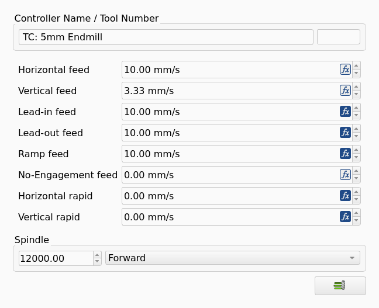
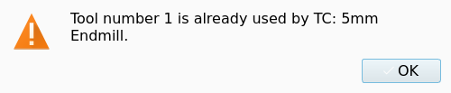

Tool Controller
Overview
A Tool Controller (TC) connects one Tool Bit to a Spindle Speed, a set of feeds and the rates of the rapid moves. An Operation refers to a TC, and does not refer to a Tool Bit directly. The TC is in the Tools group of a Job. See Job.
The TC owns one Tool Bit object. The tree view shows the Tool Bit object as a child of the TC. The figure shows a TC and its Tool Bit object in the Tools group of a Job.

See Tool Bit for the Tool Bit and its properties.
More than one TC can use the same Tool Bit with different values. For example, one TC has the values for the rough cut, and a second TC has the values for the finish cut. Tools gives the relation between Tool Bit, Tool Library and TC.
When you post-process the Job, the TC supplies these commands:
-
The Tool Bit change:
TandM6. -
The Spindle Speed:
S. -
The spindle direction:
M3,M4orM5.
Create a Tool Controller
The Toolbit Selector dialog creates one TC for each Tool Bit that you add to a Job. These controls open the dialog:
-
The Add Toolbit… command, .
-
Add on the Tools tab of the Job editor.
-
The entry for a new TC in the Tool controller list in the task panel of an Operation.
The Tool controller list in the task panel of an Operation also has an entry that copies the current TC.
introduced in 26.3: The command CAM_ToolController opens the same Toolbit Selector dialog.
No menu and no toolbar contains this command.
The command does nothing when the document contains no Job.
Tool Library describes how the dialog adds a Tool Bit to a Job.
Tool Controller editor
The Tool Controller Editor shows and changes the values of one TC. These controls open the editor:
-
A double-click on the TC in the tree view opens the Tool Controller Editor task panel.
-
Edit on the Tools tab of the Job editor opens the editor.
-
introduced in 1.1 The task panel of an Operation contains the editor for the TC of the Operation.
introduced in 26.3: The task panel of an Operation shows the editor on a separate tab.
The figure shows the Tool Controller Editor task panel.

The editor has these controls:
-
Controller Name: the label of the TC.
-
Tool Number: the number for the
Tcommand. See Tool numbers. -
Horizontal feed: the feed for horizontal moves.
-
Vertical feed: the feed for vertical moves.
-
Lead-in feed: the feed for lead-in moves.
-
Lead-out feed: the feed for lead-out moves.
-
Ramp feed: the feed for ramp moves.
-
introduced in 26.3 No-Engagement feed: the feed for moves in which the Tool Bit does not engage material and is not retracted. Minimum: 0.
-
Horizontal rapid: the rate of the horizontal rapid moves.
-
Vertical rapid: the rate of the vertical rapid moves.
-
Spindle: the direction and the speed of the spindle. Direction values:
Forward,Reverse,None. The speed is in rpm. -
introduced in 26.3 Feeds and Speeds Wizard: opens the Suggest Feeds & Speeds dialog. See Feeds and Speeds.
When the editor is in the task panel of an Operation, a warning gives the number of other Operations that use the same TC.
You cannot delete a TC in the Job editor while an Operation uses the TC.
Tool numbers
The Tool Number property of a TC holds the number that the Job uses for the Tool Bit. Two TCs of a Job can have the same Tool Number only when they use the same Tool Bit. The CAM workbench compares the Tool Bit ID values of the two Tool Bits to find if the Tool Bits are the same. Two TCs with the same Tool Bit and the same number give one Tool Bit two sets of feeds and speeds.
introduced in 26.3: The Tool Number field of the editor does not accept a number that a TC of a different Tool Bit has.
The Tool Number In Use message shows the text Tool number <number> is already used by <label>. with the label of that TC.
The field then shows the number that the TC had before, and the TC keeps this number.
The figure shows the message.

Tool numbers describes how the CAM workbench sets the number of a new TC.
Properties
-
Tool (
Link): the Tool Bit that the TC uses.
-
Tool Number (
IntegerConstraint): the number that the Tool Bit change command contains. Values: 0 to 10000. -
Spindle Speed (
Float): the speed of the spindle in rpm. -
Spindle Dir (
Enumeration): the direction of the spindle. The TC receives the initial value from the Spindle Direction property of the Tool Bit. Values:Forward,Reverse,None.
-
Horiz Feed (
Speed): the feed for horizontal moves. -
Vert Feed (
Speed): the feed for vertical moves in Z. -
introduced in 26.3 Ramp Feed (
Speed): the feed for ramp moves. Default: the expressionHorizFeed. -
introduced in 26.3 Lead In Feed (
Speed): the feed for lead-in moves. Default: the expressionHorizFeed. -
introduced in 26.3 Lead Out Feed (
Speed): the feed for lead-out moves. Default: the expressionHorizFeed. -
introduced in 26.3 No Engagement Feed (
Speed): the feed for moves in which the Tool Bit does not engage material and is not retracted. An Operation reads the value when it recomputes. The property has no default expression.
introduced in 26.3: A machine-based Post-Processor (Post) uses No Engagement Feed only when one Post-Processor Property is set.
The name of this Post-Processor Property is Output non-engaging moves at the no-engagement feed rate.
The Post then writes each G0 move that has a no-engagement feed annotation as a G1 move.
The F value of this G1 move is the no-engagement feed.
The Post-Processor Property is off by default, and the Machine Editor sets it. See Machine.
introduced in 26.3: When a TC in a document has no No Engagement Feed property, the CAM workbench adds the property when it opens the document.
-
Horiz Rapid (
Speed): the rate of the horizontal rapid moves. -
Vert Rapid (
Speed): the rate of the vertical rapid moves in Z.
Only the estimate of the cycle time and a Post that writes rapid moves as feed moves use the Horiz Rapid and Vert Rapid values.
-
introduced in 26.3 Op Type Hint (
Enumeration): the type of cut for which you use the TC. The Feeds and Speeds dialog uses the value to find a Preset. Values: empty,profile,pocket,slot,drill,adaptive,surface_finish. -
introduced in 26.3 Feed Speed Provenance (
Map): the source that wrote each of Horiz Feed, Vert Feed and Spindle Speed last. An example of a source ispreset:tool/<material>/<op>.
The CAM workbench adds the two Feeds & Speeds properties when you open the Feeds and Speeds dialog for the TC for the first time. See Feeds and Speeds.
Expressions and Job Templates
A feed property can hold an expression, for example VertFeed = HorizFeed * 0.5.
A Job Template stores each TC of the Job and the Tool Bit of each TC. The Job Template keeps the expressions of the feed properties. When you create a Job from the Job Template, the CAM workbench creates the TCs again.
introduced in 26.3: The Job Template stores No Engagement Feed with the key noengagementfeed.
Update from the Tool Library
introduced in 26.3: The Update Tools from Library command replaces the Tool Bit of a TC with a new copy of the library Tool Bit. The context menu of the Job contains the command. The CAM workbench can also make the comparison when you open a document.
The CAM workbench finds the library Tool Bit by the Tool Bit ID of the Tool Bit that the TC has. The update sets the Tool property of the TC to the new Tool Bit object. The update then removes the old Tool Bit object from the document. The TC keeps its Tool Number, its feeds and its Spindle Speed. A TC with a Tool Bit that has no match in the library does not change.
See Tool Bit for the comparison, the Tool Updates Available dialog and the preference.
Scripting
import FreeCAD as App
import Path.Tool.Controller as PathToolController
from Path.Tool.toolbit import ToolBit
job = App.ActiveDocument.getObject("Job")
tb = ToolBit.from_shape_id("endmill.fcstd").attach_to_doc(App.ActiveDocument)
tc = PathToolController.Create("TC: 6mm Endmill", tool=tb, toolNumber=3)
tc.HorizFeed = "600 mm/min"
tc.SpindleSpeed = 12000
job.Proxy.addToolController(tc)The module PathScripts.PathToolController does not exist.